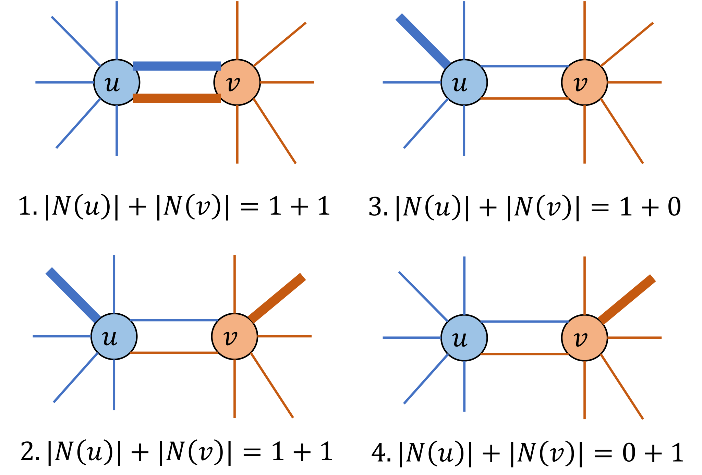
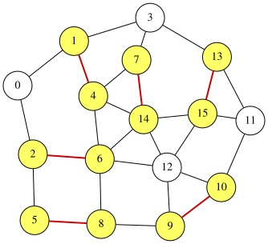

Minimum Maximal Matching Problem
A matching in an undirected graph is a set of edges such that no two edges share a common endpoint. A maximal matching is a matching to which no additional edge can be added without violating the matching condition. Given an undirected graph $G=(V,E)$, the minimum maximal matching problem asks for a maximal matching $S \subseteq E$ with the minimum number of edges.
The maximality condition of a matching can be described in a compact way. For a node $u\in V$, let $N(u)$ denote the set of edges in $S$ incident to $u$. Then $S$ is a maximal matching if and only if, for every edge $(u,v)\in E$, the following condition holds:
\[1 \leq |N(u)|+|N(v)| \leq 2\]This condition is satisfied if and only if $S$ constitute a maximal matching. To ensure that $S$ is a maximal matching, the following cases cover all possibilities:

We can formulate the minimum maximal matching problem as finding a subset $S$ that satisfies the above condition and has minimum cardinality.
For a formal proof, see the following paper:
Reference: Nakahara, Y., Tsukiyama, S., Nakano, K., Parque, V., & Ito, Y. (2025). A penalty-free QUBO formulation for the minimum maximal matching problem. International Journal of Parallel, Emergent and Distributed Systems, 1–19. https://doi.org/10.1080/17445760.2025.2579546
QUBO formuation for the minimum maximal matching
Assume that the graph has $n$ vertices and $m$ edges, and that the edges are labeled $0,1,\ldots,m-1$. We introduce $m$ binary variables $x_0, x_1, \ldots, x_{m-1}$, where $x_i=1$ if and only if edge $i$ is selected (i.e., belongs to $S$). The objective is to minimize the number of selected edges:
\[\begin{aligned} \text{objective} &= \sum_{i=0}^{m-1} x_i . \end{aligned}\]To enforce the maximality condition, we use the following constraint:
\[\begin{aligned} \text{constraint} &= \sum_{(u,v)\in E} (1 \leq |N(u)|+|N(v)| \leq 2) \end{aligned}\]We construct a QUBO expression $f$ by combining the objective and the constraint as follows:
\[\begin{aligned} f &= \text{objective} + \text{constraint}. \end{aligned}\]QUBO++ program
The following QUBO++ program finds a minimum maximal matching of a fixed undirected graph with $N=16$ nodes and $M=27$ edges:
#include "qbpp.hpp"
#include "qbpp_exhaustive_solver.hpp"
#include "qbpp_graph.hpp"
int main() {
const size_t N = 16;
std::vector<std::pair<size_t, size_t>> edges = {
{0, 1}, {0, 2}, {1, 3}, {1, 4}, {2, 5}, {2, 6}, {3, 7},
{3, 13}, {4, 6}, {4, 7}, {4, 14}, {5, 8}, {6, 8}, {6, 12},
{6, 14}, {7, 14}, {8, 9}, {9, 10}, {9, 12}, {10, 11}, {10, 12},
{11, 13}, {11, 15}, {12, 14}, {12, 15}, {13, 15}, {14, 15}};
const size_t M = edges.size();
std::vector<std::vector<size_t>> adj(N);
for (size_t i = 0; i < M; ++i) {
const auto& edge = edges[i];
adj[edge.first].push_back(i);
adj[edge.second].push_back(i);
}
auto x = qbpp::var("x", M);
auto objective = qbpp::sum(x);
auto constraint = qbpp::toExpr(0);
for (const auto& e : edges) {
auto u = e.first;
auto v = e.second;
auto t = qbpp::toExpr(0);
for (const auto idx : adj[u]) {
t += x[idx];
}
for (const auto idx : adj[v]) {
t += x[idx];
}
constraint += 1 <= t <= 2;
}
auto f = objective + constraint;
f.simplify_as_binary();
auto solver = qbpp::exhaustive_solver::ExhaustiveSolver(f);
auto sol = solver.search();
std::cout << "objective = " << objective(sol) << std::endl;
std::cout << "constraint = " << constraint(sol) << std::endl;
qbpp::graph::GraphDrawer graph;
std::vector<int> selected_nodes(N);
for (size_t i = 0; i < M; ++i) {
if (sol(x[i])) {
selected_nodes[edges[i].first] = 1;
selected_nodes[edges[i].second] = 1;
}
}
for (size_t i = 0; i < N; ++i) {
graph.add_node(qbpp::graph::Node(i).color(selected_nodes[i]));
}
for (size_t i = 0; i < M; ++i) {
auto edge = qbpp::graph::Edge(edges[i].first, edges[i].second);
if (sol(x[i])) {
edge.color(1).penwidth(2.0);
}
graph.add_edge(edge);
}
graph.write("minmaxmatching.svg");
}
We first define a vector x of M binary variables, and then define objective, constraint, and f based on the formulation above.
The Exhaustive Solver is used to find an optimal solution of f.
The values of objective and constraint are printed, and the resulting graph is saved to minmaxmatching.svg.
This program produces the following output:
objective = 6
constraint = 0
Thus, $S$ contains 6 edges.
The resulting graph stored in minmaxmatching.svg is shown below:

In this graph, the selected edges in $S$ and all nodes incident to these edges are highlighted. We can see that no more edge can be added, and the maximality condition is satisfied.